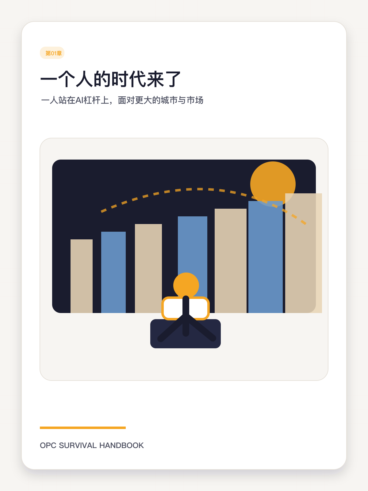
第1章 一个人的时代来了
从岗位逻辑到资产逻辑，先看懂你站在什么时代地板上
- KDP 用法：作为章节开篇整页图或小节过门图。
- 微信用法：课程详情头图、公众号长文首图、阶段分享卡。
- 讲解重点：围绕“理解OPC到底是什么，以及它和自由职业、个人IP、传统创业的区别。”做视觉锚点，不要只当装饰图。
这页把 20 万字长版书的视觉资产和案例索引集中起来，方便你做 KDP 章节排版、微信课程封面、公众号长文和社群复盘时直接调用。

从岗位逻辑到资产逻辑，先看懂你站在什么时代地板上
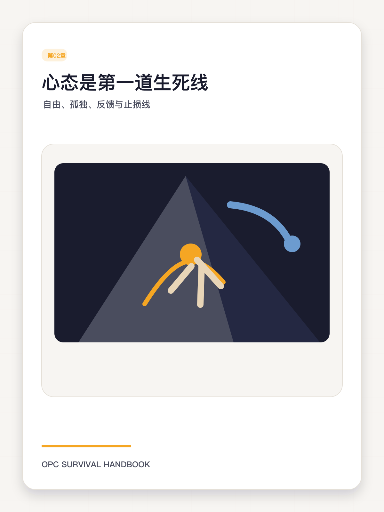
没有人给你KPI的世界里，如何建立长期可持续的内在纪律
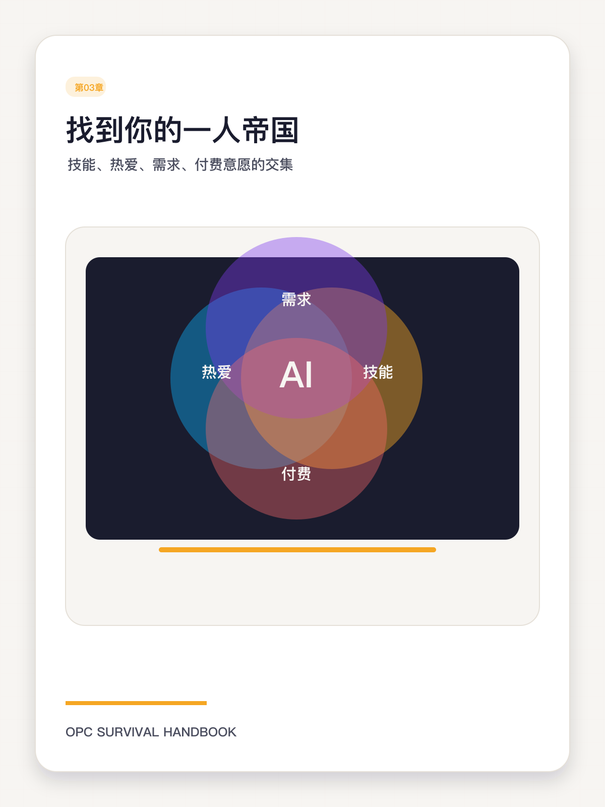
选赛道不是猜热门，而是识别你能长期占优势的问题区
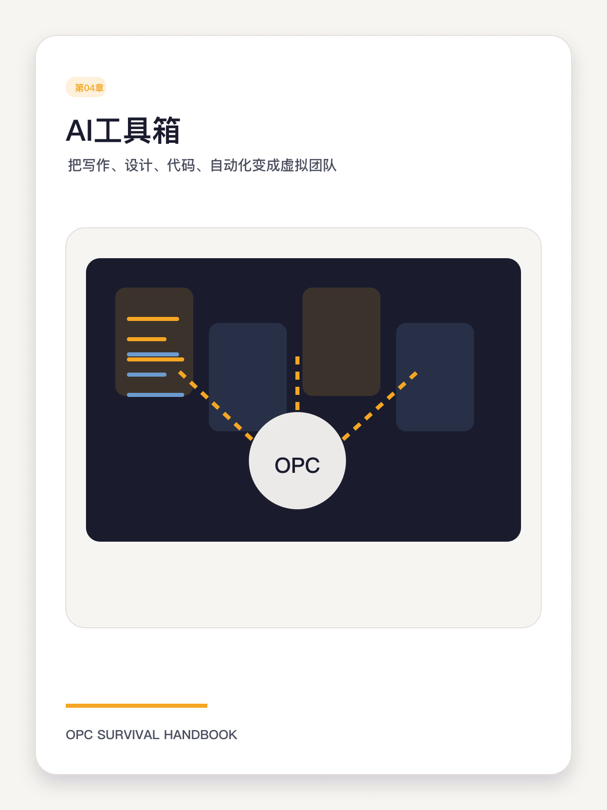
工具不是收藏品，而是岗位系统
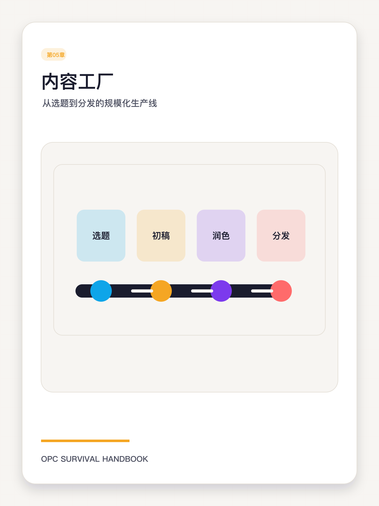
让每一次表达都进入生产线，而不是靠临场发挥
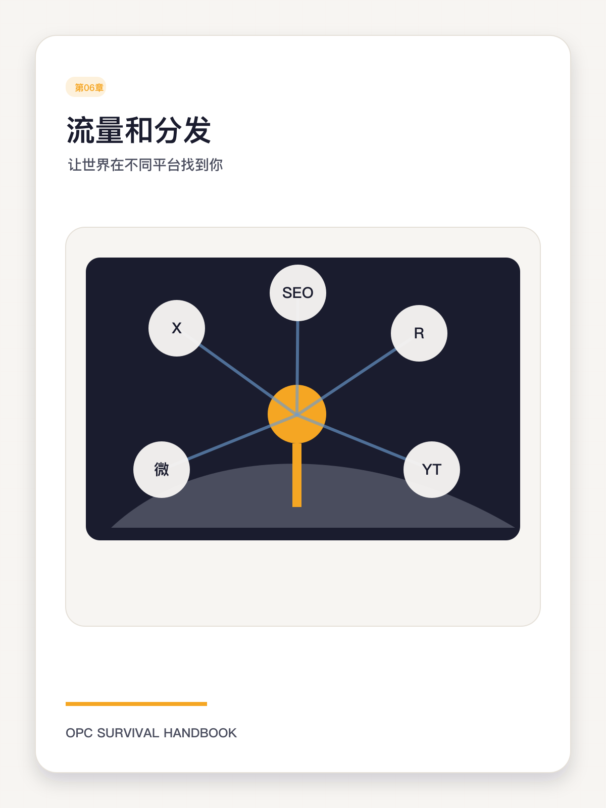
没有分发，产品只是仓库里的库存
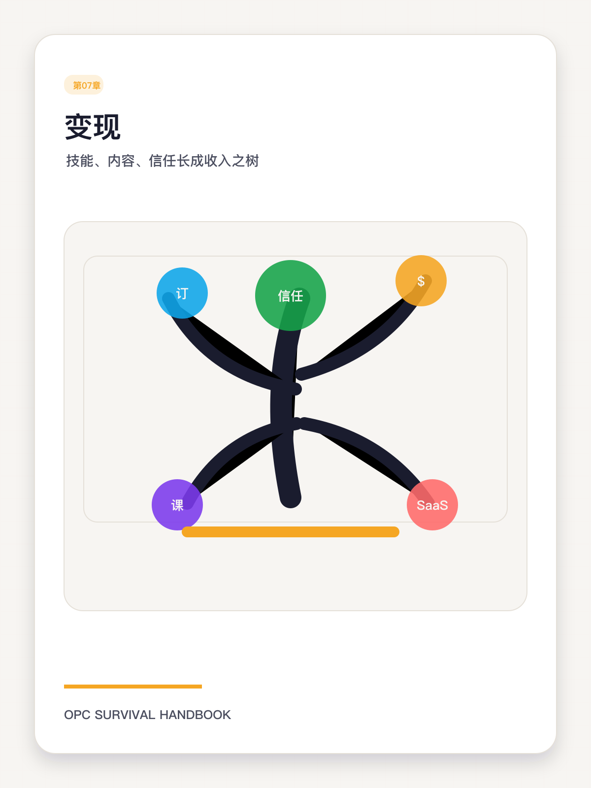
收入不是内容的副作用，而是设计出来的结果
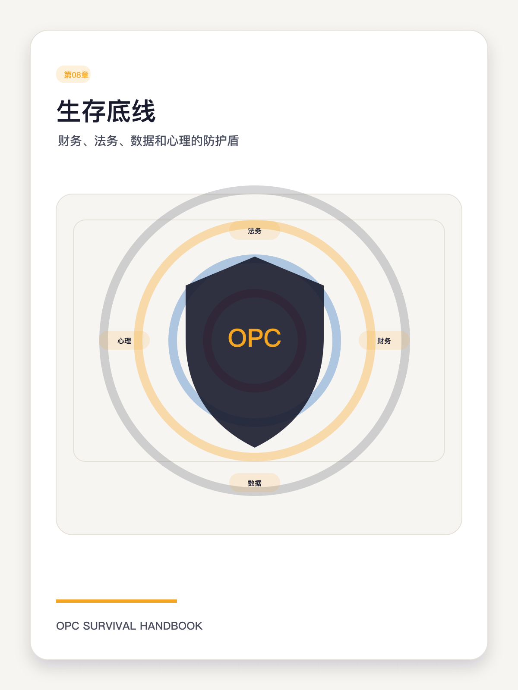
想自由，先别让一个意外把你打回原点
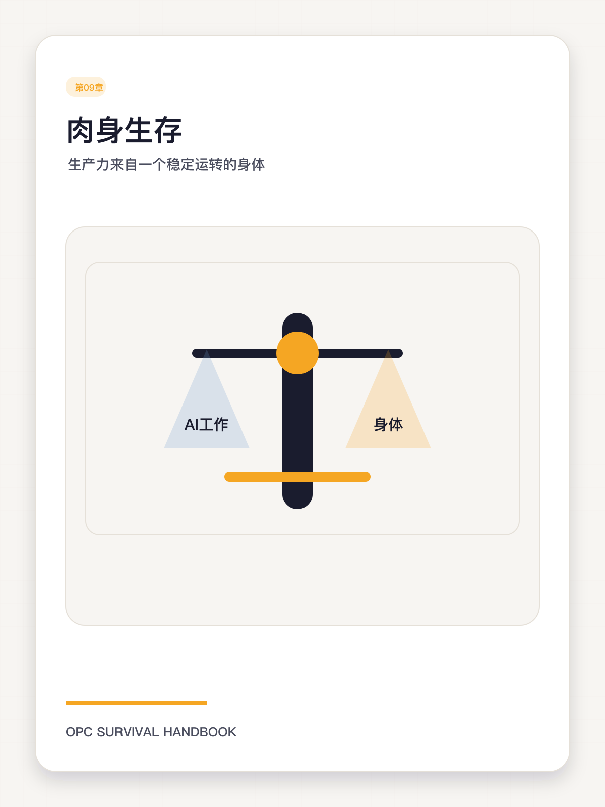
高杠杆工作，不等于高强度耗损
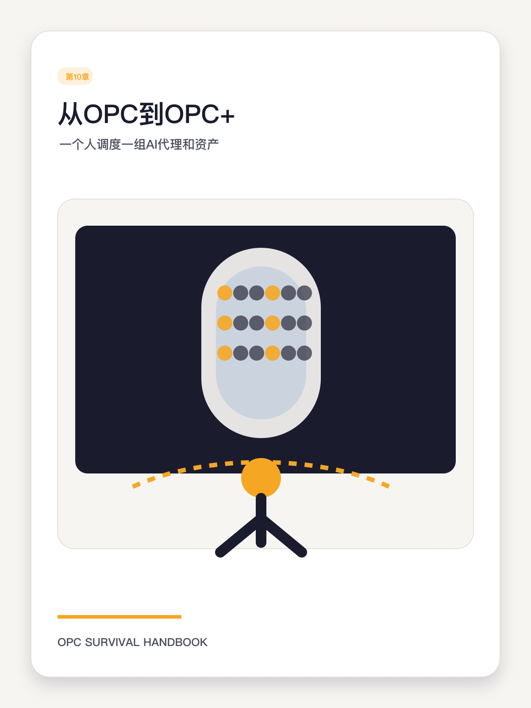
当一人闭环跑通之后，如何让它继续放大而不失控

适合放在第7章、系统课销售页、会员权益页。
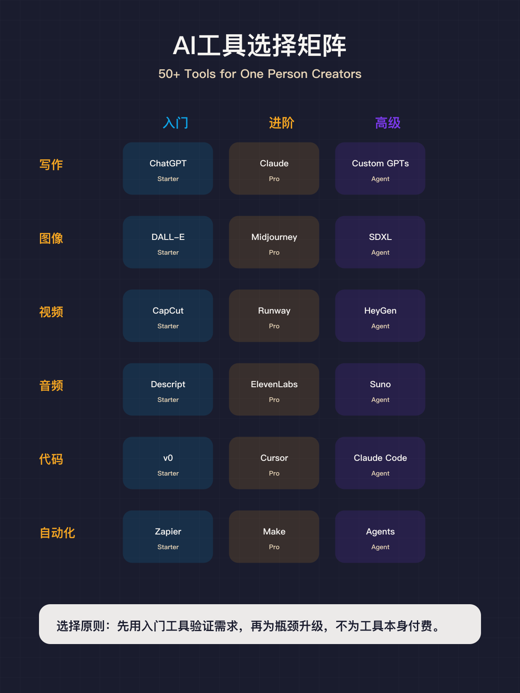
适合放在第4章、工具箱页、入门诊断器结果页。
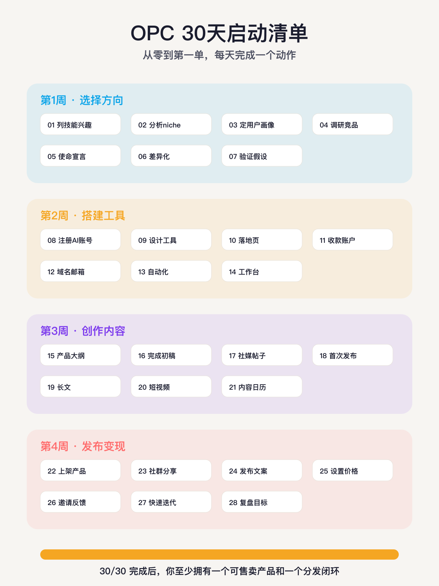
适合放在附录、训练营打卡页、公众号转化文。
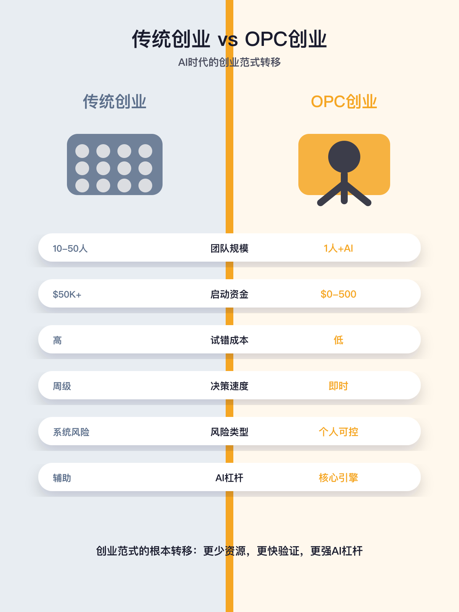
适合放在第1章、第3章和对外宣讲页。
Pieter Levels 在官方站点长期以独立开发者身份呈现自己的方法：快速发布、公开实验、围绕远程工作与数字游民场景持续做产品，而不是先组队再找需求。
适合讲法：先讲问题，再讲动作，再讲启发，避免只堆结果。
推荐放置：KDP 侧可放章节案例框；微信侧可放课节中段的案例拆解模块。
引用章节：第1章《1.2 AI如何改变人效和试错成本》、第2章《2.4 用公开构建抵消内耗》、第2章《2.6 如何处理低谷、停滞和外部比较》、第3章《3.2 用AI发散，但不用AI替你定位》、第3章《3.5 用最小验证击穿想象》、第3章《3.7 学会放弃，才算真正选了方向》、第4章《4.4 开发栈：无代码、AI代码与工程化边界》、第6章《6.2 Build in Public 不是晒单，而是建立过程信任》
Justin Welsh 的官方网站把自己的定位写得非常清楚：帮助solopreneur重新思考如何工作、赚钱和生活，核心不是规模崇拜，而是有意识地设计一个轻、稳、可持续的业务。
适合讲法：先讲问题，再讲动作，再讲启发，避免只堆结果。
推荐放置：KDP 侧可放章节案例框；微信侧可放课节中段的案例拆解模块。
引用章节：第1章《1.1 从雇佣思维迁移到资产思维》、第1章《1.5 你不是在找副业，你是在搭建微型操作系统》、第2章《2.1 自由的反面是孤独》、第2章《2.5 节奏比激情更可靠》、第3章《3.2 用AI发散，但不用AI替你定位》、第3章《3.6 20个适合OPC的方向，如何为你所用》、第4章《4.7 工具栈的最终目标：形成个人操作台》、第5章《5.3 结构模板比灵感更可靠》、第5章《5.6 内容不止负责吸引，还要负责成交》、第5章《5.7 周产能和月产能怎样规划才现实》、第6章《6.1 平台选择：先选用户，不先选热度》、第6章《6.4 邮件名单：你最该长期经营的资产之一》、第6章《6.7 用分发数据做决策，不靠体感做判断》、第7章《7.2 把服务经验产品化，而不是永远卖工时》、第7章《7.5 定价不是数学题，而是价值沟通题》、第7章《7.6 销售文案不是夸，而是澄清》、第8章《8.5 客诉、信誉与边界管理》、第9章《9.1 深度工作是OPC最贵的资源》、第9章《9.4 家庭、关系和边界会反向影响业务稳定性》、第9章《9.7 长期可持续，才是最高级的野心》、第10章《10.1 什么时候该从‘我来做’升级到‘系统来做’》、第10章《10.4 组合业务，而不是随机开分支》、第10章《10.7 最终问题：你想成为什么样的一人公司》
Ali Abdaal 在官方介绍中清楚地展示了从医学背景、边做边学、内容增长，到课程、社区和图书的资产化路径。这是一条典型的内容驱动型OPC扩张路线。
适合讲法：先讲问题，再讲动作，再讲启发，避免只堆结果。
推荐放置：KDP 侧可放章节案例框；微信侧可放课节中段的案例拆解模块。
引用章节：第1章《1.4 什么叫真正的一人闭环》、第2章《2.2 四种最常见的致命心态》、第2章《2.5 节奏比激情更可靠》、第2章《2.6 如何处理低谷、停滞和外部比较》、第3章《3.1 不公平优势不是天赋神话》、第3章《3.7 学会放弃，才算真正选了方向》、第4章《4.2 内容栈：研究、起稿、改写、审校》、第5章《5.1 内容母体：先做深内容，再做碎内容》、第5章《5.3 结构模板比灵感更可靠》、第5章《5.5 用真实案例让内容带电》、第6章《6.1 平台选择：先选用户，不先选热度》、第6章《6.6 合作分发：借别人的信任，而不是借别人的流量》、第7章《7.3 课程化：把知识从内容升级为学习路径》、第9章《9.1 深度工作是OPC最贵的资源》、第9章《9.3 休息不是奖励，而是系统需求》、第9章《9.6 运营自己：像运营产品一样运营人生节奏》、第10章《10.3 品牌资产：让名字、风格和方法成为复利结构》
Smart Passive Income 官方站点把 Pat Flynn 的路径呈现得很完整：从被裁员后的转身，到围绕播客、课程、newsletter 和社区构建长期信任系统。
适合讲法：先讲问题，再讲动作，再讲启发，避免只堆结果。
推荐放置：KDP 侧可放章节案例框；微信侧可放课节中段的案例拆解模块。
引用章节：第1章《1.3 OPC与传统创业的风险结构差异》、第1章《1.6 以康波研究院为参照搭建你的商业形态》、第2章《2.1 自由的反面是孤独》、第2章《2.3 证据感：从焦虑到判断》、第2章《2.7 建立长期主义，但不要纵容拖延》、第3章《3.3 找到高支付意愿的痛点》、第3章《3.4 先做最小画像，不要先做虚构人设》、第5章《5.2 素材池与案例池：没有积累，就没有稳定表达》、第5章《5.4 一鱼多吃：同一份思考，服务多个场景》、第5章《5.6 内容不止负责吸引，还要负责成交》、第6章《6.3 搜索分发正在重写，AEO也要纳入考虑》、第6章《6.4 邮件名单：你最该长期经营的资产之一》、第6章《6.5 私域不是喊口号，而是设计留存结构》、第7章《7.1 先设计产品阶梯，不先堆产品数量》、第7章《7.5 定价不是数学题，而是价值沟通题》、第7章《7.7 从第一单到稳定收入，路线如何设计》、第8章《8.1 六个月生活费不是保守，是战略空间》、第8章《8.3 平台依赖：不要把命运压在单一入口上》、第8章《8.6 什么时候该合规升级》、第9章《9.3 休息不是奖励，而是系统需求》、第9章《9.5 情绪管理：不要在最低谷做最大决策》、第10章《10.3 品牌资产：让名字、风格和方法成为复利结构》、第10章《10.6 90天升级路线图：从当前状态出发，而不是从理想状态出发》
康波研究院对本项目的启发，不是某一门课程，而是一种组合方式：用内容建立认知，用课程承接深度需求，用会员和社群提升留存，再把咨询、工具和活动放进同一个平台闭环。
适合讲法：先讲问题，再讲动作，再讲启发，避免只堆结果。
推荐放置：KDP 侧可放章节案例框；微信侧可放课节中段的案例拆解模块。
引用章节：第1章《1.3 OPC与传统创业的风险结构差异》、第1章《1.5 你不是在找副业，你是在搭建微型操作系统》、第1章《1.6 以康波研究院为参照搭建你的商业形态》、第1章《1.7 本书的使用方法与学习路径》、第2章《2.3 证据感：从焦虑到判断》、第2章《2.7 建立长期主义，但不要纵容拖延》、第3章《3.1 不公平优势不是天赋神话》、第3章《3.4 先做最小画像，不要先做虚构人设》、第3章《3.6 20个适合OPC的方向，如何为你所用》、第4章《4.1 用岗位思维管理工具，而不是用情绪挑工具》、第4章《4.3 自动化栈：把重复工作赶出黄金时间》、第4章《4.5 出版与课程栈：从手册到音频到平台》、第4章《4.6 把Codex和浏览器自动化放进发布流程》、第6章《6.5 私域不是喊口号，而是设计留存结构》、第6章《6.6 合作分发：借别人的信任，而不是借别人的流量》、第7章《7.1 先设计产品阶梯，不先堆产品数量》、第7章《7.2 把服务经验产品化，而不是永远卖工时》、第7章《7.3 课程化：把知识从内容升级为学习路径》、第7章《7.4 书籍、课程、音频和社群如何互相供养》、第7章《7.6 销售文案不是夸，而是澄清》、第8章《8.1 六个月生活费不是保守，是战略空间》、第8章《8.2 版权与素材：AI时代更要留下来源意识》、第8章《8.4 文档、文件和知识备份》、第8章《8.5 客诉、信誉与边界管理》、第8章《8.7 让底盘建设进入月度例行》、第9章《9.2 体能不是背景变量，而是经营变量》、第9章《9.4 家庭、关系和边界会反向影响业务稳定性》、第9章《9.7 长期可持续，才是最高级的野心》、第10章《10.2 AI代理和自动化如何成为真正的外脑外手》、第10章《10.4 组合业务，而不是随机开分支》、第10章《10.5 以康波研究院模式思考平台化》、第10章《10.7 最终问题：你想成为什么样的一人公司》
当前仓库本身就是一个真实案例：从书稿、课程、音频、插图、项目看板到GitHub Pages 发布，整套资产都是围绕同一主题逐步展开的。
适合讲法：先讲问题，再讲动作，再讲启发，避免只堆结果。
推荐放置：KDP 侧可放章节案例框；微信侧可放课节中段的案例拆解模块。
引用章节：第1章《1.1 从雇佣思维迁移到资产思维》、第1章《1.2 AI如何改变人效和试错成本》、第1章《1.4 什么叫真正的一人闭环》、第1章《1.7 本书的使用方法与学习路径》、第2章《2.2 四种最常见的致命心态》、第2章《2.4 用公开构建抵消内耗》、第3章《3.3 找到高支付意愿的痛点》、第3章《3.5 用最小验证击穿想象》、第4章《4.1 用岗位思维管理工具，而不是用情绪挑工具》、第4章《4.2 内容栈：研究、起稿、改写、审校》、第4章《4.3 自动化栈：把重复工作赶出黄金时间》、第4章《4.4 开发栈：无代码、AI代码与工程化边界》、第4章《4.5 出版与课程栈：从手册到音频到平台》、第4章《4.6 把Codex和浏览器自动化放进发布流程》、第4章《4.7 工具栈的最终目标：形成个人操作台》、第5章《5.1 内容母体：先做深内容，再做碎内容》、第5章《5.2 素材池与案例池：没有积累，就没有稳定表达》、第5章《5.4 一鱼多吃：同一份思考，服务多个场景》、第5章《5.5 用真实案例让内容带电》、第5章《5.7 周产能和月产能怎样规划才现实》、第6章《6.2 Build in Public 不是晒单，而是建立过程信任》、第6章《6.3 搜索分发正在重写，AEO也要纳入考虑》、第6章《6.7 用分发数据做决策，不靠体感做判断》、第7章《7.4 书籍、课程、音频和社群如何互相供养》、第7章《7.7 从第一单到稳定收入，路线如何设计》、第8章《8.2 版权与素材：AI时代更要留下来源意识》、第8章《8.3 平台依赖：不要把命运压在单一入口上》、第8章《8.4 文档、文件和知识备份》、第8章《8.6 什么时候该合规升级》、第8章《8.7 让底盘建设进入月度例行》、第9章《9.2 体能不是背景变量，而是经营变量》、第9章《9.5 情绪管理：不要在最低谷做最大决策》、第9章《9.6 运营自己：像运营产品一样运营人生节奏》、第10章《10.1 什么时候该从‘我来做’升级到‘系统来做’》、第10章《10.2 AI代理和自动化如何成为真正的外脑外手》、第10章《10.5 以康波研究院模式思考平台化》、第10章《10.6 90天升级路线图：从当前状态出发，而不是从理想状态出发》